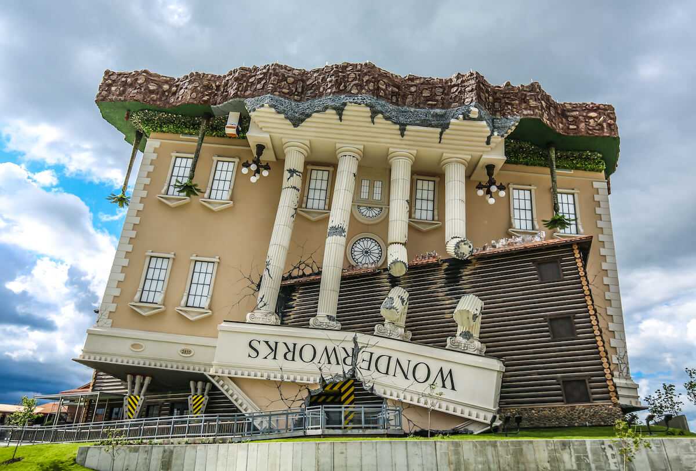
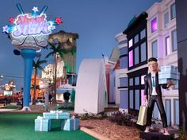
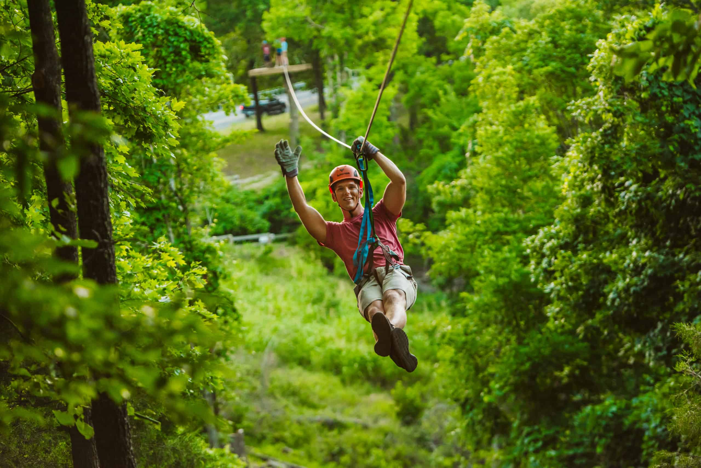
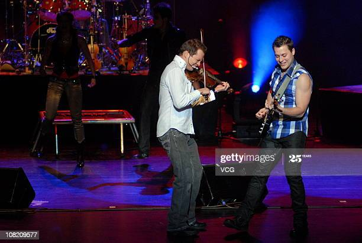

Silver Dollar City, a theme park full of exciting roller coasters, great food, delightful entertainment, and more! Come visit right now for a more spooky theme with plenty of Halloween decorations. They also have special offers this season to save you money such as: Buy one day get one free starting at $72, and 1 visit for $40 on weekdays or $50 on Saturdays after 5pm.
Wonderworks, a theme park for the mind. Stop by and discover over 100 brainteaser exhibits that'll defy your brain and stir your imagination, as you discover the story of Professor Wondor and the Wonderworks Laboratory along the way.
Shoot for the Stars Mini-Golf, a very unique mini golf course that lets you experience the landmarks of Hollywood as you work up the 18 steps of becoming a star. All the while, your agent Marty Mcbooster guides you along your journey with quips and jokes at every hole. Definitely don't pass this course up as it is one of the most entertaining mini golf courses in Missouri.
Branson Mountain Adventure Park, home of the Runaway, the first mountain coaster in the area. This family friendly ride takes you on 5,000 ft of track as gravity pulls you down hills, around corners, and through many horizontal loops. Riders have the option to go at speeds up to 30mph or slow down and enjoy the scenery at any time. This is the first of many attractions they hope to have at Branson Mountain Adventure Park.
Shepherd of the Hills Adventure Park, home to the 1907 novel and drama. Enjoy the action-packed reenactment of the novel featuring 90 actors and actresses, 40 horses, and a herd of sheep. There's also the Vigilante Extreme ZipRider, Inspiration Tower, ATV rides, and guided homestead tours for guests to enjoy. They also plan on adding more attractions, such as: rock climbing, a petting farm, and much more.
Mount Pleasant Winery, a good place for the adults to visit and enjoy some great food and wine tasting. Mount Pleasant grows its grapes locally in the Augusta Apellation and hold their product to a high standard to ensure that they always have quality wine available to taste and purchase.
The Haygoods are coming to Clay Cooper Theatre through the 31st of December. Come experience world class production and special effects as 5 brothers and 1 sister put on a legendary show performing on 20+ instruments. The hit's of today's Country, Rock, and Pop artist as well as music from the past 5 decades in an electrifying excursion of rhythm, sound, and song that you won't ever forget. Find out why fans of all ages love The Haygoods and their music.